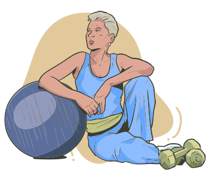

Os tratamentos habituais visam adequar bons hábitos de vida que podem colaborar na diminuição da sintomatologia e na incidência de osteoporose, entre os quais estão a prática de atividades físicas regulares, a evitação do tabagismo e do etilismo e boa alimentação.
Algumas plantas medicinais podem ser indicadas nesses casos, em especial aquelas ricas em fitoestrógenos e com atividade SERM:
